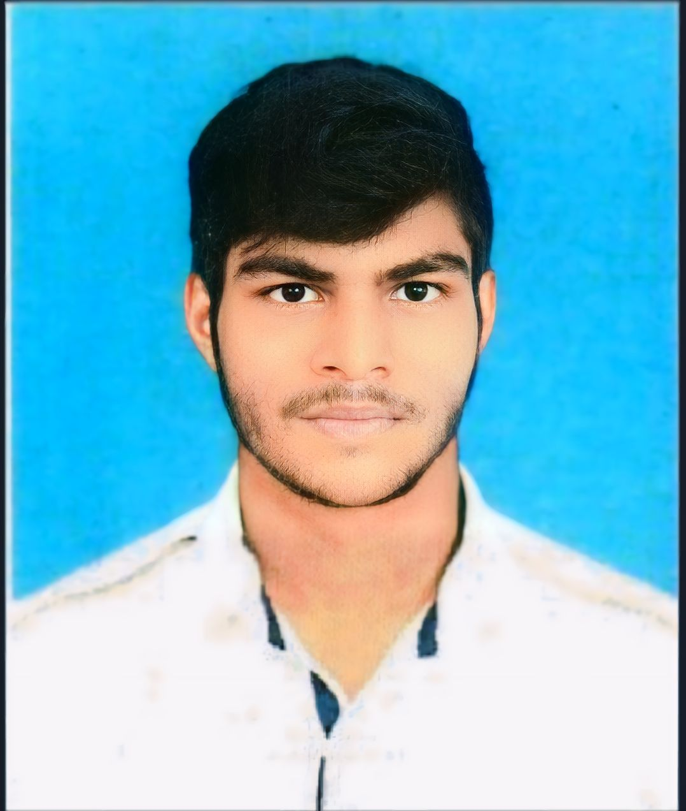

Mukunthan C

Objective
- To find a suitable position to challenge my web development skills to create scalable web applications for diverse businesses.Wishful to utilize my groundbreaking creative skills resulting in my and the company's growth.
Education
- Bachelor of Computer Application with 83.5% (2018-2021) - Guru Nanak College (Madras University).
- HSC with 77.8% (2017-2018) - Oxford Matriculation Higher Secondary School.
- SSLC with 92.2% (2015-2016) - Oxford Matriculation Higher Secondary School.
Work Experience
- Worked as a process associate in Wipro limited from February 2022 - March 2023.
Skills
- HTML, CSS, Javascript, React js .
Awards & Certifications
- Completed fullstack Web development online course in Udemy
Others